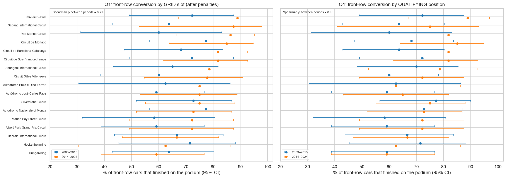
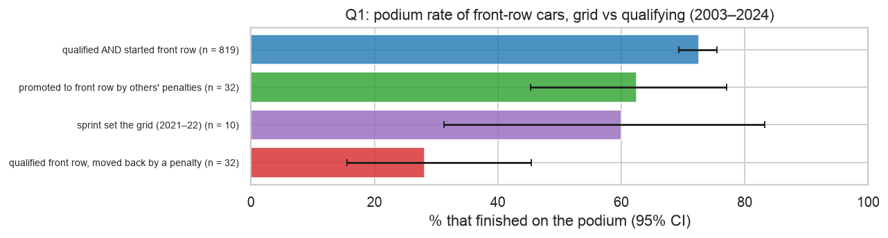
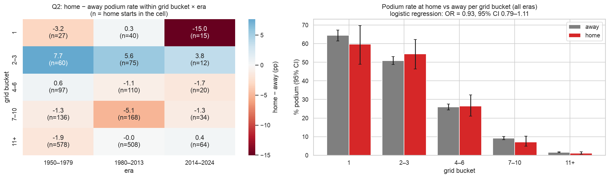
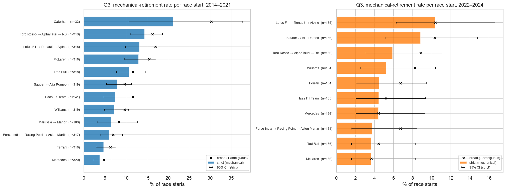

Each answer joins several tables, shows a plot, and states its grain, how missing values were handled, and whether the pre-race cutoff matters. All three use the cleaned driver-race table of Section 1 (starters only, no Indianapolis 500, one row per driver per race).
2.1 Q1. Which circuits convert a front-row start into a podium most often, and does the ranking change after 2014?
The front row is measured two ways: by grid (slot 1–2 after penalties) and by qualifying (1st–2nd).
The periods are 2003–2013 vs 2014–2024. 2003 is the first season with complete qualifying data, so both definitions use the same rows.
A circuit is ranked only with at least 8 front-row starts (4 races) in both periods.
Every rate gets a 95% Wilson interval. Chi-square tests ask whether circuits differ at all and whether the overall rate changed; Spearman's rank correlation asks whether the order carries over.

Figure 2.1 Front-row conversion per circuit with 95% intervals, 2003–2013 (blue) vs 2014–2024 (orange). Left: by grid slot. Right: by qualifying position (same circuit order).
circuit (grid definition)
2003–13 rate
rank
n
2014–24 rate
rank
n
Suzuka
72%
4
18
89%
1
18
Sepang
64%
10
22
88%
2
8
Yas Marina
60%
13
10
86%
3
22
Monaco
77%
1
22
85%
4
20
Spa-Francorchamps
72%
4
18
82%
5
22
Silverstone
73%
3
22
75%
9
24
Monza
77%
1
22
73%
12
22
Hungaroring
64%
10
22
59%
17
22
Table 2.1 Selected circuits from the full 17-circuit ranking (notebook §5.1): conversion rate, rank and number of front-row starts per period.

Figure 2.2 Podium rate of front-row cars by how their grid slot relates to their qualifying position (95% intervals).
front-row case, 2003–2024
n
podium
qualified and started on the front row
819
72.5%
promoted by others' penalties
32
62.5%
sprint set the grid (2021–22)
10
60.0%
qualified front row, moved back by a penalty
32
28.1%
Table 2.2 Grid vs qualifying: why both definitions matter.
Answer.
Front-row starts convert more often after 2014: 68.0% (n = 400) → 75.9% (n = 456), chi-square p = 0.013.
Best converters. After 2014: Suzuka (89%), Sepang (88%, only 8 starts), Yas Marina (86%) and Monaco (85%). Before: Monaco and Monza (77%) and Silverstone (73%).
The ranking appears to change, but the change cannot be shown. Monza falls from joint 1st to 12th and Yas Marina rises from 13th to 3rd. But each circuit has only 8–24 starts per period, the circuits are not statistically distinguishable in either period (p = 0.99 and 0.80), and the rank correlation between periods is weak and not significant (ρ = 0.21, p = 0.42). Monza's fall is one podium fewer (17 → 16 of 22), because all circuits sit between 58% and 89%. By qualifying position ρ = 0.45 (p = 0.07). The robust finding is the overall rise.
Grid vs qualifying matters. A front-row qualifier moved back by a penalty podiums only 28%, against 73% for one who starts there (Table 2.2). The grid after penalties is therefore the better measure of the real starting chance.
Grain / missingness / cutoff. One row per driver-race, aggregated per circuit and period. The 22 rows from 2003–2024 without a qualifying position all started 19th or lower, so none is a front-row case; they are kept, not imputed. Grid, qualifying and the sprint result are all known before the race.
2.2 Q2. Do drivers podium more often at home, after controlling for starting position?
A home race means the circuit's country matches the driver's nationality. The match uses an explicit hand-written map (e.g. "British" → "UK"), and both lists of values were checked for gaps. The circuit's location decides, not the race name, and a dual nationality counts both countries.
Control: home and away are compared within the same grid bucket (1 / 2–3 / 4–6 / 7–10 / 11+) × era (1950–79 / 1980–2013 / 2014–24). This is a pivot table, drawn as a heatmap; the cells are averaged with weights = home starts.
Test: a logistic regression podium ~ home + grid slot + era with race-clustered standard errors (drivers in one race are not independent).

Figure 2.3 Left: home − away podium rate (percentage points) within each grid bucket × era; n = home starts. Right: podium rate at home (red) vs away (grey) per grid bucket, all eras, with 95% intervals.
estimate
home − away (pp)
raw, no control
−2.12
within grid bucket
−0.60
within grid bucket × era (main)
−0.83
Table 2.3 Home effect in percentage points (1,944 home starts). Logistic regression (clustered by race): odds ratio 0.93 (95% CI 0.79–1.11), p = 0.43.
Answer.
No evidence that drivers podium more often at home once starting position is accounted for. The odds ratio 0.93 has an interval (0.79–1.11) that includes 1.
The raw gap comes from who races at home. Raw, home drivers podium 2.1 pp less often. 13.1% of home starts are by drivers with five or fewer career starts (one-off local entrants), against 1.4% of away starts.
Controlling shrinks the gap to −0.6 pp within grid buckets and −0.8 pp within grid bucket × era, about 61% less than raw. The 15 heatmap cells range from −15.0 to +7.7 pp, with signs in both directions in every era: no consistent home effect.
This is an association, not a causal effect.
Grain / missingness / cutoff. One row per driver-race. Nationality and circuit country have no missing values; nationalities with no circuit in their country (e.g. Finnish) are always "away". Nationality, circuit and grid are known before the race, so home_race would be a legal feature; it was built as a candidate, but it shows no signal and is not a model input (D30).
2.3 Q3. Which constructors have the highest mechanical-retirement rate in 2014–2021 vs 2022–2024?
Rate = mechanical retirements ÷ race starts. Cars that were on the grid but did not take the start are not starts.
The strict rate counts only labels that name a failed component. The broad rate adds ambiguous labels, as a robustness check.
Teams are grouped by lineage. A renamed team keeps its factory, staff and car, but gets a new constructorId, and four renames fall on the period boundary (Racing Point → Aston Martin and Renault → Alpine in 2021, AlphaTauri → RB and Alfa Romeo → Sauber in 2024). A small dictionary joins Toro Rosso → AlphaTauri → RB, Force India → Racing Point → Aston Martin, Lotus F1 → Renault → Alpine, Sauber ↔ Alfa Romeo and Marussia → Manor, as the dataset notes recommend.
Only lineages with ≥ 30 starts are ranked; rates have 95% Wilson intervals, and a chi-square test asks whether teams differ at all.

Figure 2.4 Mechanical-retirement rate per race start, by team lineage: bars = strict rate with 95% interval, × = broad rate (+ ambiguous labels), n = starts.
2014–2021 (overall 8.9%)
starts
strict
95% CI
2022–2024 (overall 5.5%)
starts
strict
95% CI
Caterham
33
21.2%
10.7–37.8
Lotus F1 → Renault → Alpine
135
10.4%
6.3–16.7
Toro Rosso → AlphaTauri → RB
319
14.4%
11.0–18.7
Sauber ↔ Alfa Romeo
136
8.8%
5.1–14.8
Lotus F1 → Renault → Alpine
318
13.2%
9.9–17.4
Toro Rosso → AlphaTauri → RB
136
5.9%
3.0–11.2
McLaren
316
13.0%
9.7–17.1
Williams
134
5.2%
2.6–10.4
…
…
Force India → Racing Point → Aston Martin
317
6.0%
3.9–9.2
McLaren
136
3.7%
1.6–8.3
Ferrari
318
4.7%
2.9–7.6
Red Bull
136
3.7%
1.6–8.3
Mercedes
320
3.8%
2.2–6.4
Force India → Racing Point → Aston Martin
134
3.7%
1.6–8.4
Table 2.4 Highest and lowest strict rates per period (full tables with broad rates: notebook §5.3).
Answer.
2014–2021. Caterham (21.2%, only 33 starts), Toro Rosso → AlphaTauri → RB (14.4%), Lotus F1 → Renault → Alpine (13.2%) and McLaren (13.0%) had the highest mechanical-retirement rates. Mercedes, the dominant team, was the lowest (3.8%). Teams clearly differ (p < 0.001).
2022–2024. Lotus F1 → Renault → Alpine (10.4%) and Sauber ↔ Alfa Romeo (8.8%) are highest, but differences between teams are not significant (p = 0.18) and the intervals overlap, so this order is weak evidence.
Change between the periods. Failures became rarer overall (8.9% → 5.5%) and for almost every lineage. McLaren (13.0% → 3.7%), Red Bull (10.7% → 3.7%) and Toro Rosso → AlphaTauri → RB (14.4% → 5.9%) improved most; only Sauber ↔ Alfa Romeo (7.8% → 8.8%) and Mercedes (3.8% → 4.4%) rose slightly. For the 10 lineages present in both periods the rank correlation is +0.27 (p = 0.45): no evidence that the same teams stay the least reliable.
Why lineage matters. Grouped by constructorId, "Alpine 2014–2021" was a single season and "RB 2022–2024" only 2024, and the cross-period correlation came out −0.49 because identities were mixed.
Robustness. The broad rate keeps the same top four in 2014–2021 and the same top three in 2022–2024.
Grain / missingness / cutoff. One row per car that took the start, aggregated per lineage and period; status has no missing values. Status is post-race information: it is used only in this analysis, never as a feature for the current race. A team's past reliability is a legal feature when computed from earlier races only (con_mech_rate_last10).